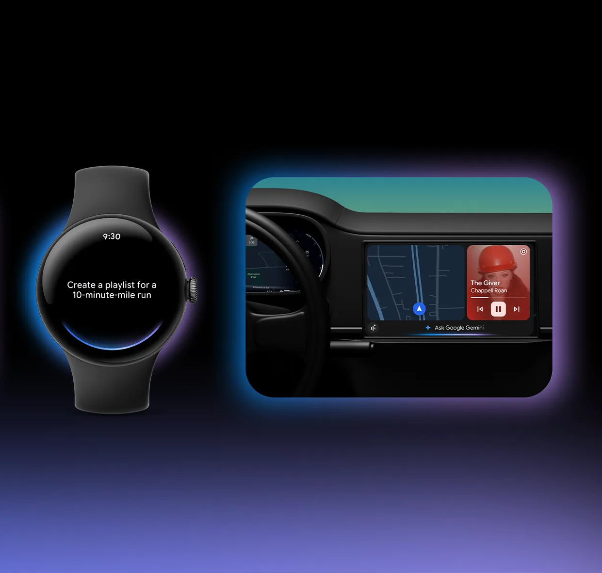

Gemini on Peripherals & Google Duplex
Gemini on Peripherals
I pioneered the world's first interaction design patterns for embedding agentic AI onto peripheral devices. As UX lead, I set the blueprint for Google Gemini across the Pixel Watch, Galaxy Watch, Android Auto and smart glasses, resolving conversational and hardware constraints with no prior precedent. I engineered the core foundations of this new paradigm: voice-only consent flows that bypass the phone, graceful offline behaviors, frictionless out-of-the-box setup, and the global migration framework from Google Assistant to Gemini.
Google Duplex
I defined the interaction paradigm for agentic AI executing real-world tasks through autonomous phone calls. As UX lead for Google Duplex, I built the systems that scaled the technology beyond initial demonstrations into global infrastructure. My work anchored Pixel Call Assist's automated spam detection and drove the platform's critical pandemic-era response, deploying AI to autonomously call businesses at massive scale to verify operating hours. In doing so, I established the foundational UX blueprints for machines transacting with humans over voice on a user's behalf.